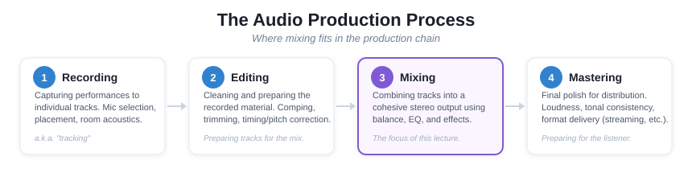

"We are mixing engineers, but more importantly: we are sonic artists."
— Roey Izhaki, Mixing Audio
Mixing is the process of combining individual recorded tracks into a finished single piece of audio. It is both a technical craft and a creative act.

Bobby Owsinski's framework from The Mixing Engineer's Handbook organizes everything in a mix into six elements:


Name, colour-code, and group your tracks. Route related channels to subgroup busses (e.g., all drums to a "Drums" bus). Create a mix bus and global reverb bus. Set yourself up for clarity of signal flow and organization before you touch any processing.

Key concept: Use inserts for processing that's unique to a channel (EQ, compression). Use sends for effects shared across multiple channels and additive effects (reverb, delay). This creates a cohesive sense of space, finer control of the sound, and saves CPU.
Gain staging means setting healthy and balanced signal levels across all tracks. The goal is to keep levels in the "sweet spot": loud enough for a clean signal, quiet enough to avoid clipping and leave headroom.
Gain staging can be achieved with a gain plugin at the top of the processing chain or other means depending on the DAW. Leave your faders at unity, those will be used later on!
Use the faders and pan only — no plugins. Get the balance right first. This is the foundation of your mix.

Some typical panning:
EQ shapes the frequency content of a sound — what you hear as tone, brightness, warmth, or muddiness.

| Frequency | Problem | Solution |
|---|---|---|
| ~200 Hz | Mud, boominess | HPF or gentle cut |
| 300–500 Hz | Boxiness | Narrow cut |
| ~800 Hz | Cheap, hollow | Narrow cut |
| 1–1.5 kHz | Nasal, honky | Narrow cut |
| 4–6 kHz | Harsh, sibilant | Gentle cut or de-esser |
| 10 kHz+ | Hiss, sibilance | Shelf cut or de-esser |
Compression controls dynamic range — the difference between the loudest and quietest parts of a signal.


| Parameter | What It Does | Think of It As... |
|---|---|---|
| Threshold | Level where compression begins | The "trigger point" |
| Ratio | How much to reduce above threshold | How aggressively the dynamic range is compressed |
| Attack | How quickly compression engages | Fast = catches transients; Slow = lets transients through |
| Release | How quickly compression stops | Fast = can produce a pumping effect; Slow = smooth |
| Makeup Gain | Boosts output to compensate for reduction | Restoring perceived volume |
You can think of a compressor kind of like an automated fader that brings down the level past a certain loudness.
Reverb can create a global sense of space but can also be used as an effect on a single track or subgroup.
Today we will focus on the idea of a global reverb that helps to create a sense of shared space and coherence to a mix.

| Parameter | What It Does | Tip |
|---|---|---|
| Pre-delay | Gap before reverb begins | Longer = keeps lead element clear and upfront |
| Decay time | Length of reverb tail | Consider matching to song tempo — reverb can be rhythmic |
| Wet/dry | Blend of effect vs. original | Less is usually more |
| Type | Hall, room, plate, spring, etc. | Each has a character; experiment and get to know the sound of these different types |
Revisit your balance. Make small tweaks to fader levels, EQ, and compression now that all the processing is in place. This might also be a nice place to have a little break and step away from the mix before returning with fresh ears.
Volume rides, effect sends, panning movement, filter sweeps — automation is the final stage and a great place to get creative.
| Resource | What It Is | URL |
|---|---|---|
| cambridge-mt.com | 500+ free multitrack sessions for mixing practice | cambridge-mt.com/ms/mtk/ |
| iZotope Learn Hub | Free articles and guides on mixing fundamentals | izotope.com/en/learn |
| Produce Like A Pro (YouTube) | Full mixing tutorials with free multitracks | YouTube |